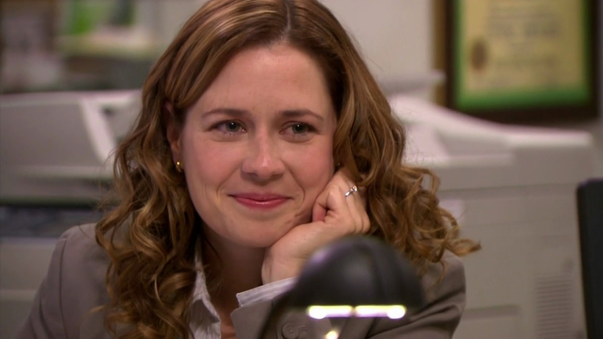

Michael Gary Scott (Steve Carell) is the regional manager of Dunder Mifflin in Scranton, Pennsylvania. He is originally based on David Brent, his counterpart in the British version of The Office. However, Scott develops into a significantly different character from him as the series progresses.
Dwight Schrute
Dwight Kurt Schrute III (Rainn Wilson) is a salesman at Dunder Mifflin and the assistant to the regional manager for the majority of the series, until he becomes regional manager in Season 9. The character is based on Gareth Keenan of the original British version of the show. He is the only character to both appear and have dialogue in every episode of the series.
Jim Halpert
James Duncan "Jim" Halpert (John Krasinski) is introduced as a sales representative at the Scranton branch of paper distribution company Dunder Mifflin, before temporarily transferring to the Stamford branch in the third season. Upon the merger of Scranton and Stamford branches, he becomes Assistant Regional Manager, and later co-manager alongside Michael Scott during the sixth season. The character is based on Tim Canterbury from the original version of The Office.

Pam Beesly
Pamela Morgan Halpert, née Beesly (Jenna Fischer). Her counterpart in the original British version of The Office is Dawn Tinsley. Pam begins the series as the receptionist at the paper distribution company Dunder Mifflin. Later on in the series, she becomes a sales representative and office administrator. She is the love interest of Jim Halpert, whom she later marries in season 6.
Ryan Howard
Ryan Bailey Howard (B. J. Novak), is based on the character of Ricky Howard from the original British version of The Office, as well as Neil Godwin during the fourth season. His role is expanded from the original British series to the extent that he's usually considered a main character. Ryan Howard departs the series in the ninth-season premiere along with his love interest Kelly Kapoor, however they both return in the series finale to be at Dwight and Angela's wedding.
Kelly Kapoor
Kelly Rajanigandha Kapoor (Mindy Kaling) is the customer service representative at the Scranton branch of Dunder Mifflin. She is often romantically involved with Ryan Howard. Kelly departs the series in the ninth-season premiere along with her husband Ravi, a pediatrician. She returns in the series finale to be at Dwight and Angela's wedding. She is an original character created for the series, with no counterpart in the British original series
Angela Martin
Angela Noelle Martin (Angela Kinsey) is introduced as the senior accountant, head of the Party Planning Committee, and safety officer at the Scranton branch of Dunder Mifflin. She is based on Sheila from the original British version of The Office. Her character serves as the stuck-up and more professional face of the branch. She begins a relationship with co-worker Dwight Schrute, whom she begins secretly dating in the second season, has a child with in the eighth, and marries in the ninth.
Phyllis Vance
Phyllis Vance (née Lapin) (Phyllis Smith) is a sales representative at the paper distributor Dunder Mifflin. She comes across as a quiet but friendly type who loves "girl talk" and gossip. But underneath her sweet, motherly exterior, she can sometimes be very vindictive and nasty, often to Angela Martin but sometimes even to someone as nice as Pam Halpert. She is often insulted and embarrassed by branch manager Michael Scott, who frequently describes her as non-feminine and old, despite having been classmates with her in high school. She looks to be in her late 40s, with short, dark red hair and large body.
Oscar Martinez
Oscar Martinez (Oscar Nunez) is an accountant at the Scranton branch of Dunder Mifflin. He is a rational and efficient worker who is frequently exasperated by the antics of the office. He is the son of Mexican parents and a gay man. In the Season 3 premiere, Michael Scott inadvertently outs him to his co-workers. He is based on Oliver from the original British version of The Office.
Meredith Palmer
Meredith Palmer (portrayed by Kate Flannery, and Henriette Mantel in the pilot) is the socially inappropriate and sexually promiscuous representative at the Dunder Mifflin Scranton branch. In season 2, episode 15; season 8, episode 1; and season 9, episode 23, she is said to have the job of Supplier Relations; however, in the first season, her job was said to be an Accountant. Her computer always displays the solitaire game found in the MS package.